Week 6: Likelihood, Maximum Likelihood, and a Power Analysis in Code
NRES 746
Sept. 28-30, 2026
R code from this page is also in the companion script. No packages beyond base R are needed.
This material follows Bolker, Ecological Models and Data in R, sections 6.1-6.2.1 and 6.3.1 (likelihood and maximum likelihood, pp. 227-236 and 243-247) and 5.3 (power analysis, pp. 209-226).
Likelihood and maximum likelihood estimation
Simulation runs a model forward: choose the parameters, then generate data. Inference runs it backward: the data are fixed, and the question is which parameter values could have produced them. This part defines the likelihood, explains why we work with its negative logarithm, and shows three ways to find the parameter values that make the data most probable.
1. Big picture

A data-generating model (the MODELS box) says how data arise for given parameter values. The FIT step confronts that model with real data. Nearly every fitting method in this course, from maximum likelihood to Markov chain Monte Carlo, is built on one quantity: the likelihood, the probability of the data we actually observed under a fully specified model (Bolker p. 228).
2. WOD: writing the likelihood
The WOD (a short warm-up exercise at the start of class) asked students to write a likelihood from scratch. Four sage-grouse nests were monitored; each either hatched at least one egg (\(y_i = 1\)) or failed (\(y_i = 0\)):
| Nest | Sagebrush cover (%) | Outcome (1 = hatched, 0 = failed) |
|---|---|---|
| 1 | 30 | 1 |
| 2 | 20 | 1 |
| 3 | 10 | 0 |
| 4 | 30 | 1 |
If every nest has the same success probability \(p\), one nest's outcome has probability \(P(y \mid p) = p^{y}(1-p)^{1-y}\): \(p\) when \(y = 1\) and \(1 - p\) when \(y = 0\). Read the other way, with the outcome fixed and \(p\) allowed to vary, the same formula is the likelihood of \(p\). The likelihood is written as a function of the parameter alone, \(\mathcal{L}_1(p)\), with no conditioning bar, because it is not a probability distribution over \(p\). The subscript counts the observations.
If the nests are independent, the probability of all four outcomes is the product of the four probabilities:
\[\mathcal{L}_4(p) = \prod_{i=1}^{4} p^{y_i}(1-p)^{1-y_i} = p^3 (1-p).\]
p_grid <- seq(0, 1, by = 0.005)
lik_nests <- function(p) p^3 * (1 - p)
p_three <- c(0.25, 0.5, 0.75)
par(mar = c(4, 4.5, 0.5, 0.5))
plot(p_grid, lik_nests(p_grid), type = "l", lwd = 2,
xlab = "Nest success probability, p", ylab = "Likelihood")
points(p_three, lik_nests(p_three), pch = 16, cex = 1.2)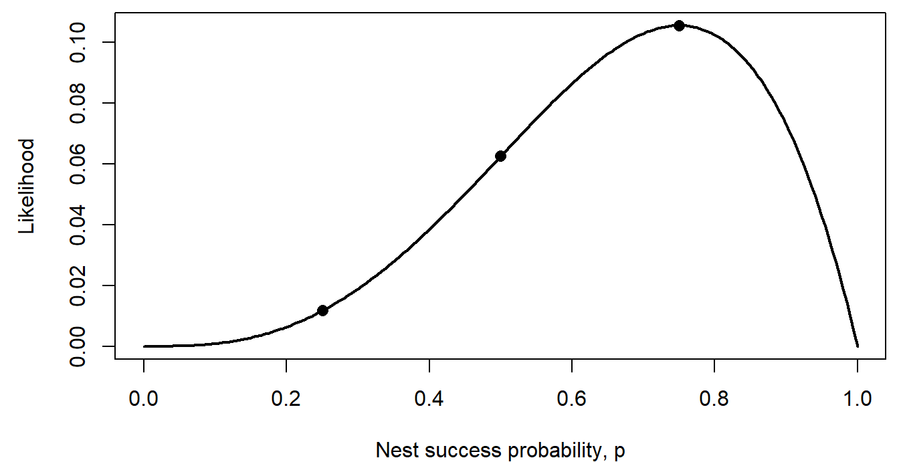
The dots are the values the WOD asked for: \(3/256\), \(16/256\), and \(27/256\). The WOD went on to let \(p\) depend on sagebrush cover through a logistic function (see the logistic regression section on the next page).
Question: Add up the three likelihood values. Do they sum to 1? Should they?
3. From likelihood to negative log-likelihood
Take counts of active pika haypiles in six talus plots of equal size: 2, 5, 3, 0, 4, and 4. Model each count as Poisson with an unknown mean \(\lambda\) (haypiles per plot). The likelihood is the product of the six Poisson probabilities:
\[\mathcal{L}_6(\lambda) = \prod_{i=1}^{6} P(y_i \mid \lambda) = \prod_{i=1}^{6} \frac{\lambda^{y_i} e^{-\lambda}}{y_i!}.\]
In practice we almost never work with this product directly. We take its logarithm and change the sign:
\[\ell_6(\lambda) = \log \mathcal{L}_6(\lambda) = \sum_{i=1}^{6} \log P(y_i \mid \lambda), \qquad \text{NLL}(\lambda) = -\ell_6(\lambda).\]
- Why the log? A product of many numbers below 1 shrinks toward zero. The WOD imagined 1,852 nests, each with likelihood about 0.5: their product is about \(10^{-558}\), far below the smallest positive number a computer can store, so R rounds it to exactly 0. The sum of the logs is -1283.71, an ordinary number. Sums are also much easier to differentiate than products.
- Why the minus sign? Optimization software, including R's
optim(), is written to minimize a function. Flipping the sign turns "find the highest point of the likelihood" into "find the lowest point of the negative log-likelihood (NLL)." There is no deeper reason.
haypiles <- c(2, 5, 3, 0, 4, 4)
nll_pois <- function(lambda, y) {
-sum(dpois(y, lambda = lambda, log = TRUE))
}
lambda_grid <- seq(0.5, 7, by = 0.01)
lik_vals <- sapply(lambda_grid, function(l) prod(dpois(haypiles, l)))
nll_vals <- sapply(lambda_grid, nll_pois, y = haypiles)
par(mfrow = c(1, 2), mar = c(4, 4.5, 0.5, 0.5))
plot(lambda_grid, lik_vals, type = "l", lwd = 2,
xlab = "lambda (haypiles per plot)", ylab = "Likelihood")
abline(v = 3, lty = 3)
plot(lambda_grid, nll_vals, type = "l", lwd = 2,
xlab = "lambda (haypiles per plot)", ylab = "Negative log-likelihood")
abline(v = 3, lty = 3)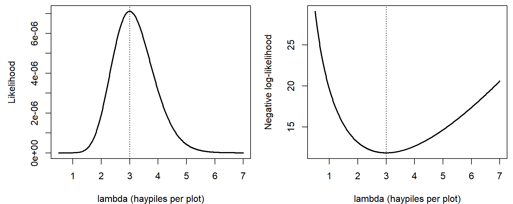
par(mfrow = c(1, 1))The widget shows where the product comes from. At each candidate mean, the left panel draws the Poisson probabilities, and the red dots mark the probability of each observed count. The likelihood multiplies the heights of the red dots; the right panel shows the NLL across all candidate means.
Question: Slide \(\lambda\) from 1.5 to 3 to 6. Which observed count is most to blame for the poor likelihood at each end? Then switch to "Four times as many plots." What happens to the likelihood at the MLE, and what happens to the shape of the NLL curve?
4. The maximum likelihood estimate
The maximum likelihood estimate (MLE) is the parameter value that makes the observed data most probable:
\[\hat{\lambda} = \arg\max_{\lambda} \mathcal{L}_6(\lambda) = \arg\min_{\lambda} \text{NLL}(\lambda).\]
Both panels above peak (or bottom out) at the same place, because taking the log never changes which of two numbers is larger. For the pikas, \(\hat\lambda = 3\).
What matters is where the peak is, not how high it is. The likelihood at the MLE is only about \(7.1 \times 10^{-6}\), and it would be smaller still with more plots: each extra observation multiplies in another probability below 1. A small likelihood is not a sign of a bad model. Only comparisons between parameter values (or models) on the same data carry information.
There are three ways to find the MLE (Bolker pp. 229-231 works through the first and third for a binomial example):
- Calculus. Set the derivative of \(\ell(\lambda)\) to zero and solve. For the Poisson this gives \(\hat\lambda = \bar y\), the sample mean. Exact, but it works only when the algebra cooperates.
- Grid search. Compute the NLL at many candidate values and keep the smallest. Easy to understand and check, but slow, and hopeless with many parameters: 100 values for each of 5 parameters is \(100^5 = 10^{10}\) evaluations.
- A numerical optimizer. Start from a guess and move downhill until the NLL stops improving. R's
optim()needs the NLL function and a starting value.
lambda_grid[which.min(nll_vals)] # grid search## [1] 3fit_pika <- optim(par = 2, fn = nll_pois, y = haypiles,
method = "Brent", lower = 0.01, upper = 20)
fit_pika$par # optimizer## [1] 3fit_pika$value # NLL at the MLE## [1] 11.85348method = "Brent" is optim()'s option for a single parameter. With two or more parameters the default method (Nelder-Mead, described on the MCMC page) works.
coarse <- seq(1, 6, by = 0.5)
par(mar = c(4, 4.5, 0.5, 0.5))
plot(lambda_grid, nll_vals, type = "l", lwd = 2, col = "grey40",
xlab = "lambda (haypiles per plot)", ylab = "Negative log-likelihood")
points(coarse, sapply(coarse, nll_pois, y = haypiles), pch = 16)
points(fit_pika$par, fit_pika$value, pch = 4, cex = 2, lwd = 3, col = "red")
legend("top", c("grid points", "optim() result"), pch = c(16, 4),
col = c("black", "red"), bty = "n")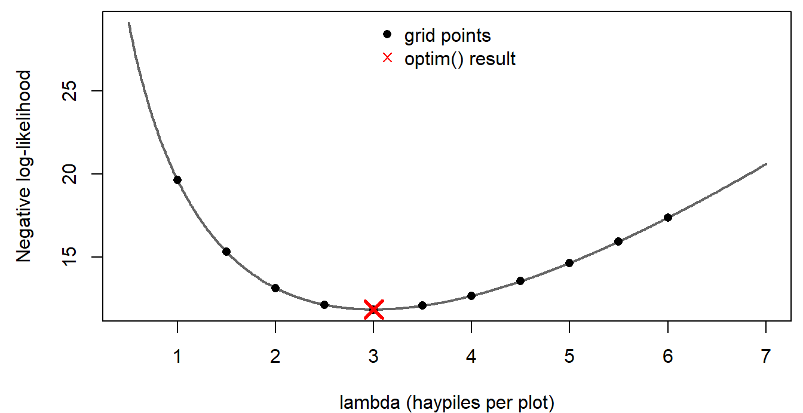
Discussion
- A labmate fits the Poisson model to the pika counts and reports that the likelihood at the MLE is only \(7.1 \times 10^{-6}\), so "the model must fit badly." Is that a fair conclusion? What would you look at instead?
- Multiplying the six probabilities assumes the plots are independent. Give an ecological reason that could fail for neighboring talus plots. Would it change the MLE, our confidence in it, or both?
Bonus: fitting by simulation
Before likelihood, one way to fit a model is by trial and error with simulation: guess the parameters, simulate many data sets, and see whether the real data look like they could have come from the same model. The data here are R's built-in trees data set: diameter (labeled Girth in the data; inches, at 4.5 ft) and timber volume (cubic feet) of 31 felled black cherry trees. A power law, the usual form for allometry, is a natural model:
\[V_i \sim \text{Normal}\left(a D_i^{\,b},\ \sigma\right).\]
data(trees)
diam <- trees$Girth # diameter in inches (mislabeled "Girth")
vol <- trees$Volume # cubic feet
power_curve <- function(d, a, b) a * d^b
# 95% range of volumes simulated at each diameter, for parameters (a, b, sigma)
sim_band <- function(par, d_seq, n_sims = 1000) {
sims <- replicate(n_sims, rnorm(length(d_seq), power_curve(d_seq, par[1], par[2]), par[3]))
apply(sims, 1, quantile, probs = c(0.025, 0.975))
}set.seed(6)
d_seq <- seq(8, 21, length.out = 50)
guesses <- list(c(0.1, 2.2, 3), c(0.5, 1.6, 3), c(0.5, 1.6, 15))
par(mfrow = c(1, 3), mar = c(4, 4, 2, 0.5))
for (g in guesses) {
band <- sim_band(g, d_seq)
plot(diam, vol, pch = 16, ylim = c(-20, 110), xlab = "Diameter (in)",
ylab = "Volume (cubic ft)",
main = paste0("a = ", g[1], ", b = ", g[2], ", sigma = ", g[3]), cex.main = 1)
polygon(c(d_seq, rev(d_seq)), c(band[1, ], rev(band[2, ])),
col = adjustcolor("steelblue", 0.25), border = NA)
lines(d_seq, power_curve(d_seq, g[1], g[2]), lwd = 2, col = "steelblue4")
}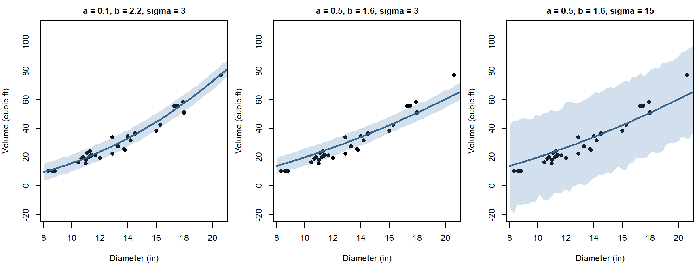
par(mfrow = c(1, 1))The first guess puts most trees inside the 95% band. The second runs too high for the smallest trees and too low for the largest. The third "fixes" the second by making the noise huge.
Question: Why not simply increase \(\sigma\) until every point falls inside the band?
Likelihood replaces judging by eye with one number per guess. The NLLs for the three guesses:
nll_power <- function(par, d, v) {
-sum(dnorm(v, mean = power_curve(d, par[1], par[2]), sd = par[3], log = TRUE))
}sapply(guesses, nll_power, d = diam, v = vol)## [1] 83.91204 113.81103 114.48733The first guess has by far the lowest NLL. Widening the band in the third guess doesn't rescue the badly shaped curve: when the distribution is spread over a wide range, including impossible negative volumes, every observed volume gets a low density. The next part fits this model properly.
Fitting a model with several parameters
These topics opened the lab on maximum likelihood. They cover the pieces needed to fit any model by likelihood: densities for continuous data, writing a negative log-likelihood function, starting values and optim(), and checking that the fit makes sense. The example is the black cherry tree data from the bonus section above.
1. Likelihood for continuous data
par(mar = c(4, 4.5, 0.5, 0.5))
plot(diam, vol, pch = 16, xlab = "Diameter (in)", ylab = "Volume (cubic ft)")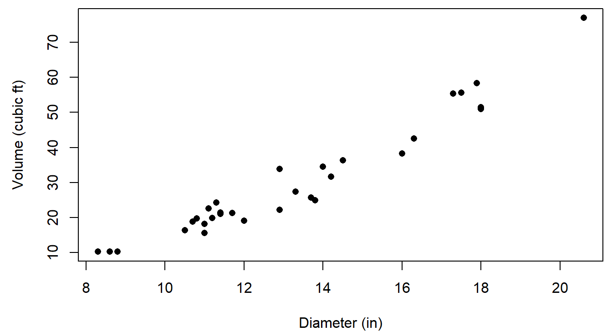
Why a power law? A tree trunk is roughly a cylinder or cone, with volume proportional to diameter\(^2 \times\) height. If height didn't change with diameter, \(b\) would be 2. Wider trees also tend to be taller, so we expect \(b\) somewhat above 2.
For continuous data, the probability of any exact value is zero, so the likelihood uses the probability density instead (Bolker p. 229). For the first tree (diameter 8.3 in, volume 10.3 cubic ft), with parameters close to the best fit:
par_try <- c(a = 0.087, b = 2.24, sigma = 3.2)
mu_1 <- power_curve(diam[1], par_try["a"], par_try["b"]) # expected volume
dens_1 <- dnorm(vol[1], mean = mu_1, sd = par_try["sigma"])
c(expected = unname(mu_1), density = unname(dens_1))## expected density
## 9.9598817 0.1239673par(mar = c(4, 4.5, 0.5, 0.5))
curve(dnorm(x, mu_1, par_try["sigma"]), from = 0, to = 22, lwd = 2,
xlab = "Volume (cubic ft) of a tree with diameter 8.3 in", ylab = "Probability density")
abline(v = vol[1], col = "red", lwd = 2)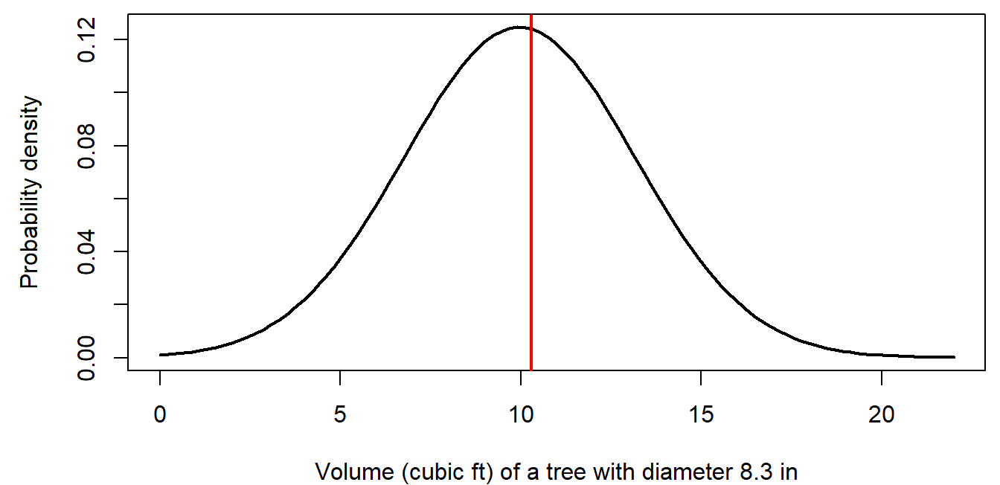
The likelihood of this one observation is the height of the curve where the red line crosses it, 0.124.
- A density isn't a probability, and it depends on the units. Measure volume in cubic meters instead of cubic feet, and the same tree's density is 4.38. The change is the same for every parameter value, though, so it doesn't move the MLE or change any comparison between parameter values.
- For all 31 trees, the likelihood is the product of 31 densities, \(1.4 \times 10^{-35}\), and the log-likelihood is the sum of their logs, -80.24.
2. Writing a negative log-likelihood function
Every NLL function has the same structure (Bolker pp. 243-244):
- Input: a vector of candidate parameter values (and the data).
- Deterministic part: compute each observation's expected value from the parameters (here, \(a D_i^b\)).
- Stochastic part: compute the log probability (or log density) of each observation, given its expected value and any noise parameters.
- Output: the negative of their sum.
nll_power(), written in the bonus section, follows this pattern:
nll_power <- function(par, d, v) {
-sum(dnorm(v, mean = power_curve(d, par[1], par[2]), sd = par[3], log = TRUE))
}nll_power(par_try, d = diam, v = vol)## [1] 80.24198Check a new NLL function on values you can verify another way, for example against a one-observation calculation like the one in section 1, before handing it to an optimizer.
3. Starting values and optim()
optim() needs a starting guess for every parameter. It doesn't have to be good, but it should be in the right neighborhood, especially for nonlinear models. Two strategies (Bolker uses both on pp. 244 and 246):
- Use what the parameters mean. \(b \approx 2\) from the geometry above. Then the first tree, volume 10.3 at diameter 8.3, suggests \(a \approx 10.3 / 8.3^2 = 0.15\). The points scatter a few cubic feet around any smooth curve, so \(\sigma \approx 3\).
- Plot the guess against the data, and adjust until it is close.
start <- c(a = 0.15, b = 2, sigma = 3)
par(mar = c(4, 4.5, 0.5, 0.5))
plot(diam, vol, pch = 16, xlab = "Diameter (in)", ylab = "Volume (cubic ft)")
curve(power_curve(x, start["a"], start["b"]), add = TRUE, lwd = 2, lty = 2)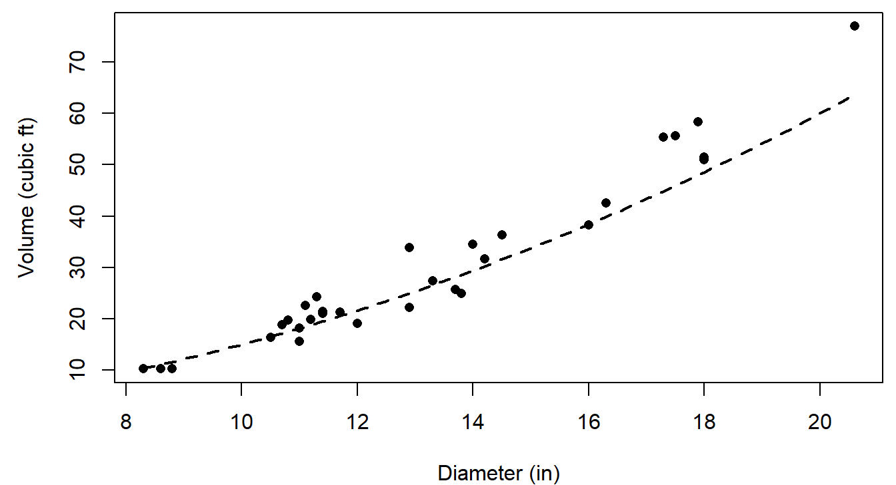
The guess runs a little high for large trees, but it is close enough for optim():
fit_trees <- optim(par = start, fn = nll_power, d = diam, v = vol)
fit_trees$par # MLEs of a, b, and sigma## a b sigma
## 0.0866026 2.2364132 3.1817626fit_trees$value # NLL at the MLE## [1] 79.86371fit_trees$convergence # 0 means optim() thinks it converged## [1] 0optim()passes the extra arguments (dandv) on tonll_power().- Always check
convergence, and try a second starting point. A different start that reaches the same answer is reassuring:
round(optim(c(a = 0.05, b = 2.5, sigma = 5), nll_power, d = diam, v = vol)$par, 3)## a b sigma
## 0.087 2.236 3.181- The estimate \(\hat b = 2.24\) is above 2, as the geometry suggested.
- \(\sigma\) must be positive. A common trick is to estimate \(\log \sigma\) instead and exponentiate inside the NLL function, so the optimizer can never try a negative value.
4. Checking the fit
An MLE is the best parameter set for this model. It says nothing about whether the model describes the data well. Bolker (p. 245) recommends always plotting the fit. Simulating many data sets from the fitted model, as in the bonus section, shows the range of data the model expects:
set.seed(7)
band_fit <- sim_band(fit_trees$par, d_seq)
par(mar = c(4, 4.5, 0.5, 0.5))
plot(diam, vol, pch = 16, xlab = "Diameter (in)", ylab = "Volume (cubic ft)",
ylim = c(0, 85))
polygon(c(d_seq, rev(d_seq)), c(band_fit[1, ], rev(band_fit[2, ])),
col = adjustcolor("steelblue", 0.25), border = NA)
curve(power_curve(x, fit_trees$par["a"], fit_trees$par["b"]), add = TRUE,
lwd = 2, col = "steelblue4")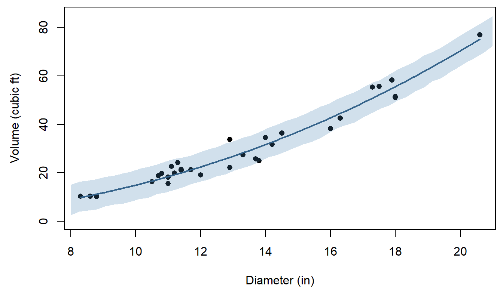
Question: The model assumes the same noise (\(\sigma\)) for small and large trees. Does the plot support that? If not, what kind of distribution might describe volume better?
Question: The same recipe fits any other curve. An exponential curve, \(V = a e^{bD}\), has its best NLL at 81.57, compared with 79.86 for the power law. Is a difference that size enough to prefer the power law? What else would you want to know?
Bonus: deviance and goodness of fit
The NLL compares parameter values for one model, but on its own it doesn't say whether the model fits. One classical check compares the model with a saturated model, which gives every observation its own parameter and so fits perfectly. For the pikas, the saturated Poisson model sets each plot's mean equal to its own count.
The deviance is twice the difference in NLL between the fitted and saturated models. If the model is correct, the deviance approximately follows a \(\chi^2\) distribution (see the likelihood ratio section on the next page), with degrees of freedom equal to the difference in the number of parameters, here \(6 - 1 = 5\):
nll_saturated <- -sum(dpois(haypiles, lambda = haypiles, log = TRUE))
deviance_pika <- 2 * (nll_pois(3, haypiles) - nll_saturated)
c(deviance = deviance_pika, df = 5,
p_value = pchisq(deviance_pika, df = 5, lower.tail = FALSE))## deviance df p_value
## 8.0893090 5.0000000 0.1513818The expected value of a \(\chi^2\) distribution is its degrees of freedom, so for a model that fits, the deviance divided by its degrees of freedom should be near 1. Here it is 1.62, and the \(p\)-value of 0.15 gives no strong evidence against the Poisson model. That is why model summaries in R (for example, from glm()) report the residual deviance and its degrees of freedom. With only six small counts the \(\chi^2\) approximation is rough, so a simulation check like the one above is worth doing too.
A power analysis in code
This part builds a power analysis for a wildlife monitoring program, one tested function at a time. A power analysis uses simulated data from a model we specify to ask how often a study design would detect an effect of a given size, before anyone collects data. The design question: how much survey effort, and how often, does it take to detect a 25% decline in a rare toad population?
1. Big picture
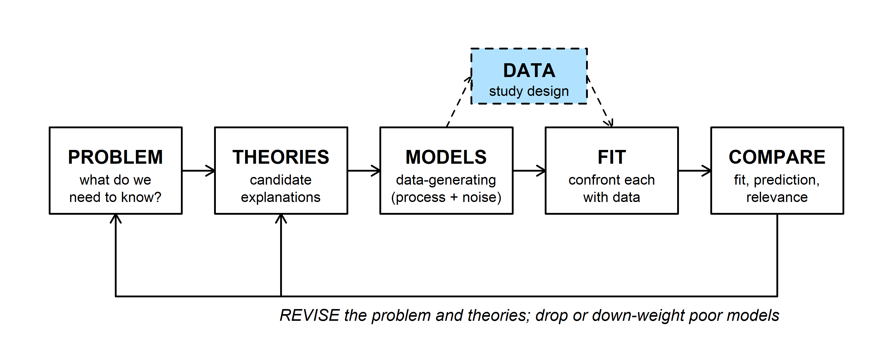
The dashed side box is study design. A fully specified model (MODELS) can generate data for any proposed sampling plan, and analyzing those simulated data sets the way we'd analyze the real ones (FIT) shows how often the plan would work. Bolker's section 5.3 works through power analysis this way.
The code below also shows a way of working that applies to any simulation or likelihood code: write one small function at a time, and test each one against a case where you already know the answer before building on it.
2. WOD: find the bugs
The WOD showed two short functions, each with one bug. Both run without an error. detect_prob(k) should give the probability that \(k\) person-days of searching detect an animal that each person-day detects with probability 0.02, which is \(1 - (1 - 0.02)^k\). sim_detect() should simulate many surveys (3 visits each, detection probability 0.4 per visit) and return the fraction with at least one detection.
detect_prob <- function(k, pobs = 0.02) {
1 - pobs^k
}
sim_detect <- function(R = 1000, visits = 3, p = 0.4) {
detected <- logical(R)
for (i in seq_len(R)) {
n_det <- rbinom(1, size = visits, prob = p)
detected <- n_det > 0
}
mean(detected)
}Question: Find each bug. For one of them, what quick check (one line of code and the answer you'd expect) would have caught it?
3. The design problem
A state wildlife agency is planning a 25-year monitoring program for a rare, secretive toad. The management goal is a program with at least a 75% chance of detecting a decline of 25% or more over 25 years.
- Population: \(N_0 = 1000\) toads in year 0, declining by the same proportion each year, \(N_t = N_0 \lambda^t\) with \(\lambda = 0.75^{1/25}\), so \(N_{25} = 750\).
- Surveys: each person-day of searching detects a given toad with probability 0.02. A survey uses \(k\) person-days and is repeated every \(s\) years, starting in year 1. Each survey's count is Binomial(\(N_t\), detection probability).
- Analysis: fit a straight line to log(count) against year. A decline is detected if the slope is negative and its \(p\)-value is at most 0.05. (Fitting on the log scale gives an unbiased estimate of the yearly rate of decline.)
- Costs: $200 per person-day, plus $2,000 for each survey expedition.
What is the cheapest design that meets the goal?
4. Building and testing the pieces
Detection probability. A toad is missed on one person-day with probability \(1 - 0.02\), and on all \(k\) person-days with probability \((1 - 0.02)^k\), so a survey detects it with probability \(q(k) = 1 - (1 - 0.02)^k\).
detect_prob <- function(k, pobs = 0.02) {
1 - (1 - pobs)^k
}
detect_prob(1) # one person-day should equal pobs## [1] 0.02detect_prob(3)## [1] 0.058808True abundance. Test it with a vector of years, since that's how the next function will call it:
true_abundance <- function(t, N0 = 1000, lambda = 0.75^(1/25)) {
N0 * lambda^t
}
true_abundance(c(0, 25)) # should return 1000 and 750 together## [1] 1000 750Simulated counts. One binomial draw per survey year:
simulate_counts <- function(t_survey, k, N0 = 1000, lambda = 0.75^(1/25),
pobs = 0.02) {
N_t <- true_abundance(t_survey, N0, lambda)
rbinom(length(t_survey), size = round(N_t), prob = detect_prob(k, pobs))
}
set.seed(11)
counts <- simulate_counts(1:25, k = 3)
length(counts) # should be 25## [1] 25par(mar = c(4, 4.5, 0.5, 0.5))
plot(1:25, counts, pch = 16, xlab = "Year", ylab = "Count",
ylim = c(0, max(counts) * 1.1))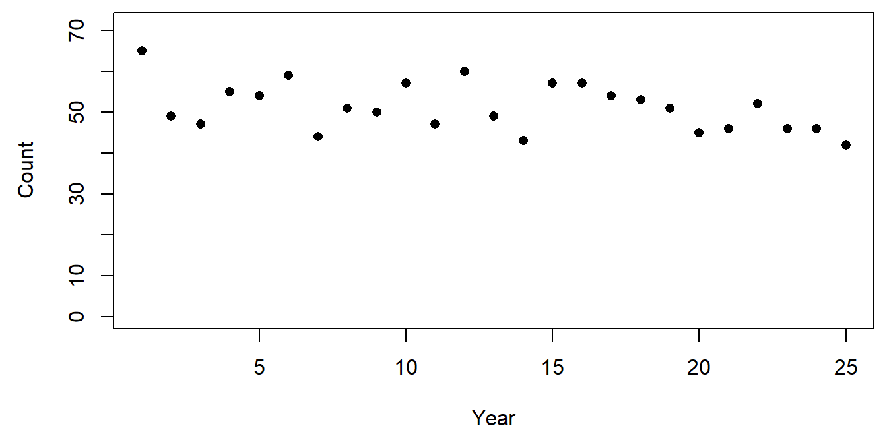
round() is there because a binomial's number of trials must be a whole number. The counts sit far below the true abundance (1000 falling to 750) because each survey detects fewer than 6% of the toads.
The decision rule. A negative slope and \(p \le 0.05\):
detect_decline <- function(t_survey, counts, alpha = 0.05) {
s <- summary(lm(log(counts) ~ t_survey))$coefficients[2, ]
unname(s[1] < 0 && s[4] <= alpha)
}
detect_decline(1:25, counts)## [1] TRUEA test with a known answer: simulate a stable population (\(\lambda = 1\)) many times. A significant slope should turn up about 5% of the time, but only about half of those slopes are negative, so the rule should report a decline about 2.5% of the time.
set.seed(12)
null_hits <- replicate(1000, {
detect_decline(1:25, simulate_counts(1:25, 3, lambda = 1))
})
mean(null_hits)## [1] 0.0235. Power across designs
estimate_power() simulates R monitoring programs for one design and returns the fraction that detect the decline:
estimate_power <- function(k, s, R = 1000, lambda = 0.75^(1/25),
alpha = 0.05) {
t_survey <- seq(1, 25, by = s)
mean(replicate(R, {
counts <- simulate_counts(t_survey, k, lambda = lambda)
detect_decline(t_survey, counts, alpha)
}))
}
set.seed(14)
estimate_power(3, 1, lambda = 1) # false-decline rate## [1] 0.025estimate_power(3, 1) # power## [1] 0.822Before trusting a power estimate, check that the same function gives the expected false-decline rate (about 0.025) when there is no decline.
Now every combination of \(k\) from 1 to 15 and \(s\) from 1 to 5:
set.seed(746)
grid <- expand.grid(k = 1:15, s = 1:5)
grid$power <- mapply(estimate_power, grid$k, grid$s,
MoreArgs = list(R = 1000))par(mar = c(4, 4.5, 0.5, 0.5))
plot(NA, xlim = c(1, 15), ylim = c(0, 1), xlab = "Person-days per survey, k",
ylab = "Estimated power")
abline(h = 0.75, lty = 2, col = "grey40")
for (ss in 1:5) {
lines(grid$k[grid$s == ss], grid$power[grid$s == ss], col = ss, lwd = 2)
}
legend("bottomright", legend = paste("s =", 1:5), col = 1:5, lwd = 2,
bty = "n", cex = 0.8)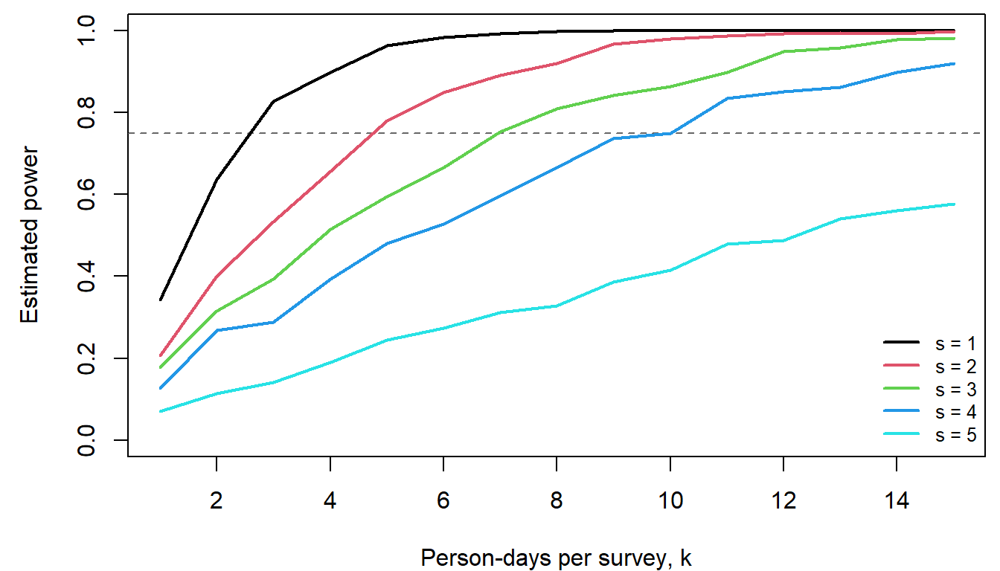
Power rises with effort per survey and falls with the interval between surveys. Next, the cost of each design and the cheapest ones that meet the goal:
cost_of <- function(k, s) length(seq(1, 25, by = s)) * (2000 + 200 * k)
grid$cost <- mapply(cost_of, grid$k, grid$s)
ok <- grid[grid$power >= 0.75, ]
head(ok[order(ok$cost), ], 5)## k s power cost
## 55 10 4 0.750 28000
## 56 11 4 0.834 29400
## 37 7 3 0.753 30600
## 57 12 4 0.850 30800
## 58 13 4 0.861 32200The cheapest designs sit right at the 0.75 line, and each estimate comes from a finite number of simulations. With 1,000 simulations, the Monte Carlo standard error of a power near 0.75 is \(\sqrt{0.75 \times 0.25 / 1000} \approx 0.014\). Re-checking the three cheapest candidates with 5,000 simulations each:
top3 <- head(ok[order(ok$cost), ], 3)
set.seed(999)
top3$power_5000 <- mapply(estimate_power, top3$k, top3$s, MoreArgs = list(R = 5000))
top3$mc_se <- sqrt(top3$power_5000 * (1 - top3$power_5000) / 5000)
top3## k s power cost power_5000 mc_se
## 55 10 4 0.750 28000 0.7568 0.006067186
## 56 11 4 0.834 29400 0.8052 0.005600946
## 37 7 3 0.753 30600 0.7380 0.006218617Explore the design space in the widget. Each move of a slider simulates one new monitoring program (left) and shows that design's estimated power from the grid above (right).
Question: Set \(k = 10\) and \(s = 4\), the cheapest design that meets the goal, and click "Simulate another program" ten times. How many of your programs detected the decline? Why is the answer for any single program so unpredictable, even when the power is 0.75?
Discussion
- The cheapest design (\(k = 10\), \(s = 4\), $28,000) had estimated power 0.750 from 1,000 simulations and 0.757 from 5,000. The next design (\(k = 11\), \(s = 4\), $29,400) came in at 0.805. Which would you recommend to the agency, and why?
- Every check above used a case with a known answer: one person-day, a vector of two years, a stable population. Pick one function and describe a check you would add.
- The simulation assumes the population declines smoothly, with all the year-to-year scatter coming from imperfect detection. Real populations also have good and bad years that carry over to the next year. How do you think that would change the power, and the false-decline rate?
Bonus: prompting an AI assistant
Code like this is a natural job for an AI assistant, as long as the thinking (the model and the plan) comes first and every piece is tested. Some pairs of prompts for the same task:
The whole problem at once.
- Weak: "Write R code for a power analysis for a declining toad population."
- Better: "Write an R function
estimate_power(k, s, R)that calls my existing functionssimulate_counts(t_survey, k)anddetect_decline(t_survey, counts). Survey years areseq(1, 25, by = s). For each ofRreplicates, simulate new counts and record whether a decline was detected. Return the fraction detected. Base R only." - The weak prompt leaves the model unstated, so the assistant fills it in with its own defaults (a canned \(t\)-test, a power package, a different noise model). The code may run and still answer a different question.
Words or equations.
- Weak: "Simulate survey counts for a population that declines 25% over 25 years with imperfect detection."
- Better: give the equations: \(N_t = N_0\lambda^t\), detection probability \(1 - (1 - p_{obs})^k\), and each count Binomial(\(N_t\) rounded, detection probability), one per survey year.
- "Declines 25%" could mean a straight-line or an exponential decline, and "imperfect detection" can be modeled many ways.
Debugging.
- Weak: "Fix my code." (with the whole script pasted)
- Better: "This function should return 25 counts, but
length(simulate_counts(1:25, 3))returns 1. Here is the function. Explain why before suggesting a fix." - A symptom, the expected behavior, and a short example make the problem checkable, and asking for an explanation first means you learn what went wrong.
Testing.
- Weak: "Is this code correct?"
- Better: "Write three tests for
detect_decline()with known answers: a clearly declining series should returnTRUE, and flat and increasing series should returnFALSE." - "Is this correct?" usually gets a confident yes. Check AI-written tests too: a test that compares a function with itself always passes.
Leading questions.
- Weak: "Show that survey frequency matters more than effort per survey."
- Better: "Compute power for \(k = 1, \ldots, 15\) and \(s = 1, \ldots, 5\) and plot it, one line per \(s\)."
- Ask for the computation and interpret it yourself.
Some general habits for writing code with an assistant:
- Work out the model and the steps on paper first. The assistant is good at turning a clear plan into code and poor at choosing the right model for your question.
- Decide your checks before you see any code, and run them afterward: lengths, edge cases, and scenarios with a known answer.
- Ask one function at a time, with its inputs, output, and equations.
- Read the code before running it, and ask the assistant to explain anything you couldn't explain to a classmate.
- Don't paste sensitive data (unpublished data, locations of sensitive species); use a small made-up example with the same structure.
- Keep track of where AI helped, and say so in your own work.